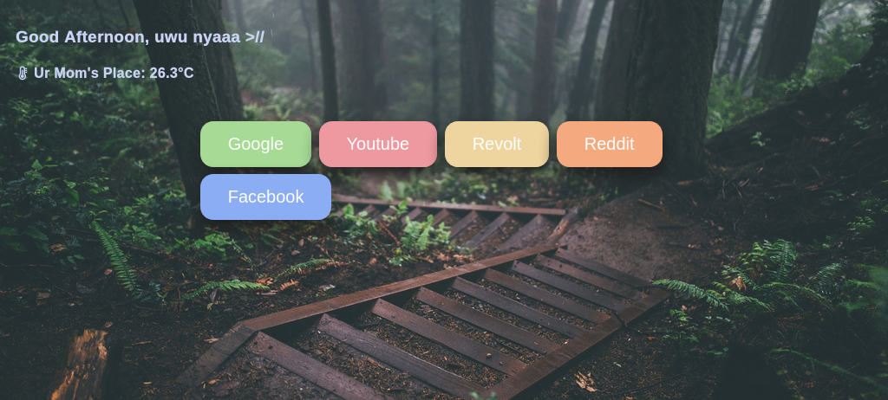

So umm I've been like offline in the online world for maybe a year because I have a life 😎 but today I am back! (for maybe only a month).
What are my plans other than being active on my socials?
* I'm working on a custom startpage using HTML,CSS,JS for myself (that you can use too if you like) so I can learn more about webdev and because I want a custom startpage.
* Speaking of webdev, I'd like to update this website to uhmm make this more "user-friendly"? in contrast to this weird mess. And after learning how to use APIs in javascript I can throw some random shit on here. Although I can make a different site for that kind of stuff
* finnaly, I'd like to learn C and BASH this summer to y'know build something useful.( I don't have time for this.)
So umm that's all i think. buh-bye